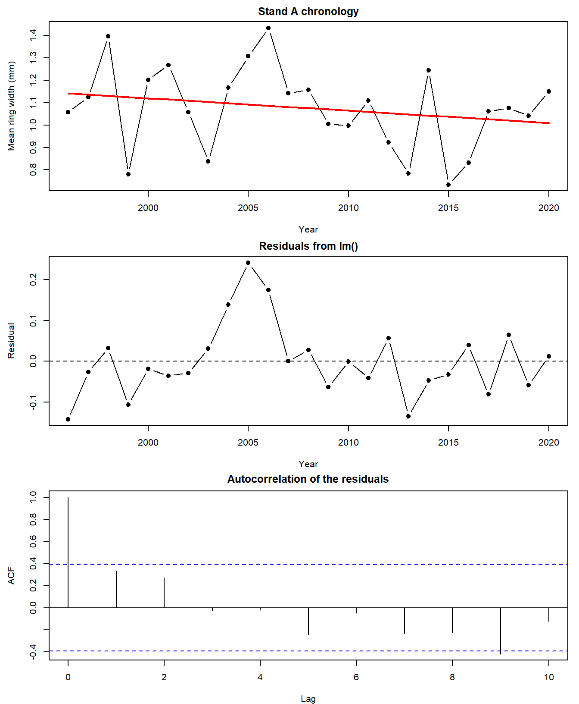
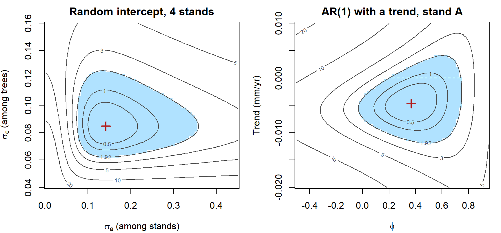
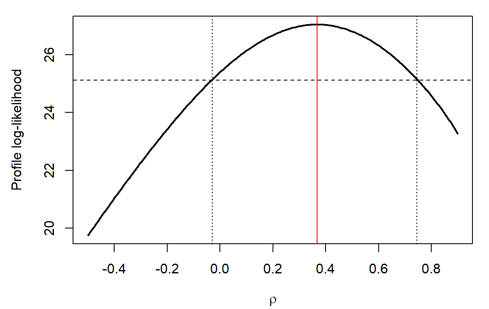
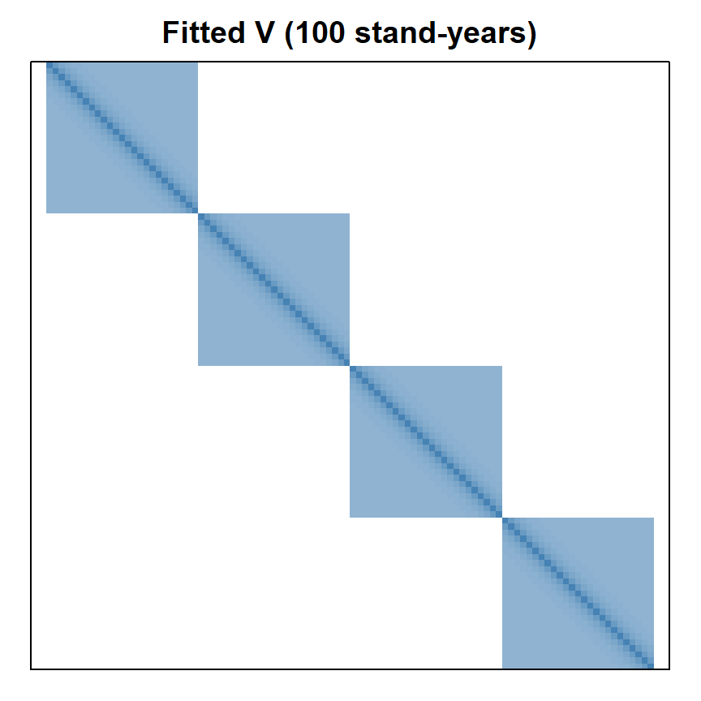

Week 12: Autocorrelation and Mixed Models
NRES 746
Nov. 9-10, 2026
R code from this page is also in the companion script. Packages: mvtnorm, lme4, nlme, glmmTMB. The reference handout Mixed models in R: nlme, lme4, and glmmTMB compares the three mixed-model packages' syntax and says when to use each.
This material follows Bolker, Ecological Models and Data in R, Chapter 10, sections 10.3-10.6 (pp. 423-441).
Autocorrelation and mixed models in R
A model for a set of observations has two parts: a mean vector, the expected value of each observation (\(X\boldsymbol\beta\) in the matrix form of a linear model), and a variance-covariance matrix \(V\). Models earlier in the course focused entirely on the mean vector, describing the expected value of each response as a function (possibly nonlinear) of one or more covariates. \(V\) was trivial: a diagonal matrix of observation-level variances, which can depend on the expected value of each observation, as in Poisson and gamma regression.
| Model | Variance of observation \(i\) | Covariance of \(i\) and \(j\) |
|---|---|---|
| Normal | \(\sigma^2\) | 0 |
| Poisson | \(\mu_i\) | 0 |
| Negative binomial | \(\mu_i + \mu_i^2/k\) | 0 |
| Gamma (Bolker's form) | \(\mu_i^2/\text{shape}\) | 0 |
Assuming independence sets every off-diagonal element of \(V\) to zero, which is what let us treat each observation separately and add up the log-likelihoods. With correlated observations we have no choice but to embrace the variance-covariance matrix!
You may be wondering: why so much attention to the multivariate normal, when much of the course has been about alternatives to the normal for the error process? First, just as every scalar random variable has a mean and a variance, every random vector has a mean vector and a variance-covariance matrix. Using \(V\) to describe correlations doesn't by itself mean the response is multivariate normal. Second, and more important, the multivariate normal is the only practical, easy-to-use distribution in which you can write down any valid \(V\) directly. GLMMs get around this by modeling the correlations among observations with a latent (unobserved) normal distribution on the link scale (e.g., the log scale), then modeling the response with one of the univariate non-normal distributions from earlier in the course. Once we condition on the latent layer, which accounts for sources of non-independence like repeated measures, blocking, and temporal autocorrelation, the observations are assumed to be independent (see the Poisson GLMM bonus).
Here we start by modeling data that is correlated through time. Then we walk through some reasons why structured-variance models are harder to fit than the independent models from earlier in the course (oh, if it were only as simple as summing up log-likelihoods across all observations!!). Then we will fit random intercept and random slope models with some popular R packages, checking them against hand-written likelihood functions where we can (it's not always possible!).
As we saw last time, when observations aren't independent, the noise part (multivariate normal is by far the most common distribution for correlated errors) is described with a structured covariance matrix \(V\) (see modeling variance).
We saw last week that a standard random intercept model makes \(V\) block-diagonal: observations in the same group are correlated (share a non-zero covariance), while other observations are independent.
The next two things we'll look at are (1) correlation that fades away with time (autoregressive models), and (2) discrete/categorical groups that differ in both their mean response (intercept) and the effect of a predictor (i.e., how much do groups differ in how they respond to the predictor?). These are often called 'random slope' models.
We'll continue using the simulated pinyon ring widths from week 11: 5 trees in each of 4 stands, 1996-2020, averaged into one chronology per stand.
# pinyon ring widths (mm): 4 stands x 5 trees x 25 years; simulated
library(mvtnorm)
set.seed(21)
years <- 1996:2020
n_yr <- length(years)
precip <- round(rgamma(n_yr, shape = 9, scale = 22 / 9), 1) # winter precipitation (cm)
stand_eff <- rnorm(4, 0, 0.12)
ar_dev <- matrix(0, 4, n_yr) # shared year-to-year deviations within each stand
for (j in 1:4) {
ar_dev[j, 1] <- rnorm(1, 0, 0.08 / sqrt(1 - 0.6^2))
for (t in 2:n_yr) ar_dev[j, t] <- 0.6 * ar_dev[j, t - 1] + rnorm(1, 0, 0.08)
}
rings <- expand.grid(year = years, tree = 1:5, stand = LETTERS[1:4])
rings$tree_id <- paste0(rings$stand, rings$tree)
tree_eff <- setNames(rnorm(20, 0, 0.1), unique(rings$tree_id))
j <- match(rings$stand, LETTERS)
t <- match(rings$year, years)
rings$precip <- precip[t]
rings$width <- round(0.35 + stand_eff[j] + tree_eff[rings$tree_id] + 0.025 * rings$precip +
ar_dev[cbind(j, t)] + rnorm(nrow(rings), 0, 0.1), 2)
chron <- aggregate(width ~ stand + year + precip, data = rings, FUN = mean)
chron <- chron[order(chron$stand, chron$year), ]
chron$stand <- factor(chron$stand)
tree_means <- aggregate(width ~ stand + tree_id, data = rings, FUN = mean)1. Autocorrelation: AR(1)
Let's take this chronology over 25 years (from stand A) and ask: is growth declining linearly over time, after accounting for precipitation?
If we regress ring width on precipitation and year, and look at the residuals:
chron_a <- chron[chron$stand == "A", ]
chron_a$year_c <- chron_a$year - 2008 # centered year: 0 = 2008
fit_lm_a <- lm(width ~ precip + year_c, data = chron_a)
summary(fit_lm_a)$coefficients## Estimate Std. Error t value Pr(>|t|)
## (Intercept) 0.568650771 0.064762246 8.780591 1.216672e-08
## precip 0.021101416 0.002580253 8.178041 4.088440e-08
## year_c -0.005505487 0.002596117 -2.120662 4.546107e-02par(mfrow = c(3, 1), mar = c(4, 4.5, 2, 1))
plot(chron_a$year, chron_a$width, type = "b", pch = 19, xlab = "Year",
ylab = "Mean ring width (mm)", main = "Stand A chronology")
trend <- predict(fit_lm_a, newdata = data.frame(precip = mean(chron_a$precip),
year_c = chron_a$year_c))
lines(chron_a$year, trend, lwd = 2, col = "red") # year trend at mean precipitation
plot(chron_a$year, resid(fit_lm_a), type = "b", pch = 19, xlab = "Year",
ylab = "Residual", main = "Residuals from lm()")
abline(h = 0, lty = 2)
acf(resid(fit_lm_a), lag.max = 10, main = "")
title("Autocorrelation of the residuals", line = 0.8)
The acf() panel shows the correlation between residuals \(k\) years apart. The lag-1 value, 0.33, falls inside the dashed bounds, so (surprisingly) this plot can't rule out independence even though we KNOW there is fairly strong autocorrelation (we simulated it that way). With 25 years the bounds are wide (\(\pm 1.96/\sqrt{25} \approx \pm 0.39\)), and a series this short often hides autocorrelation that's really there.
Other evidence helps. For example, the correlation decays down to zero- a classic sign of serially correlated errors. Also, lag-1 residual correlation is positive in all four stands:
lag1 <- function(dat) {
dat$year_c <- dat$year - 2008
acf(resid(lm(width ~ precip + year_c, data = dat)), plot = FALSE)$acf[2]
}
round(sapply(split(chron, chron$stand), lag1), 2)## A B C D
## 0.33 0.33 0.48 0.41and it's realistic just based on common sense: unmeasured conditions that last more than a year (deep soil moisture, a multi-year insect outbreak) can push growth up or down for several years in a row. Stored carbohydrates and needles that live several years also let a good growth year bleed into the next, though that's memory in the response itself, which calls for a slightly different model (see AR errors or a lagged response?).
The simplest model for temporally correlated errors is the first-order autoregressive model, AR(1): each year's total "error" is a fraction \(\rho\) of last year's plus new noise (often called an 'innovation'),
\[\eta_t = \rho\,\eta_{t-1} + \varepsilon_t, \qquad \varepsilon_t \sim \text{Normal}(0, \sigma^2), \qquad |\rho| < 1\]
Here \(\eta_t\) is the autocorrelated error and \(\varepsilon_t\) is independent noise. Note: many time-series texts (and nlme's output) call the coefficient \(\phi\) rather than \(\rho\).
Taking variances of both sides, with \(\eta_{t-1}\) and \(\varepsilon_t\) independent and \(\text{Var}(\eta_t) = \text{Var}(\eta_{t-1})\) (a stationary series):
\[\text{Var}(\eta_t) = \rho^2\text{Var}(\eta_t) + \sigma^2 \quad\Longrightarrow\quad \text{Var}(\eta_t) = \frac{\sigma^2}{1 - \rho^2}\]
and the correlation between deviations \(k\) steps apart is \(\rho^k\) (Bolker eq. 10.3.7). So the covariance between years \(s\) and \(t\) is
\[V_{st} = \frac{\sigma^2}{1 - \rho^2}\,\rho^{|s - t|}\]
The variance of an observation in a time series is this total variance, not the innovation variance \(\sigma^2\): it includes a part carried over from earlier time steps. And unlike the block-diagonal \(V\) of the random intercept, every covariance within a series is nonzero, decaying geometrically (a discrete exponential decay) as the lag grows.
The abs(row(M) - col(M)) trick from Bolker (p. 427) builds the matrix of lags:
lags <- abs(outer(1:25, 1:25, "-"))
V_ar1 <- function(rho, sigma) sigma^2 / (1 - rho^2) * rho^lags
round(V_ar1(0.6, 0.08)[1:5, 1:5], 4)## [,1] [,2] [,3] [,4] [,5]
## [1,] 0.0100 0.0060 0.0036 0.0022 0.0013
## [2,] 0.0060 0.0100 0.0060 0.0036 0.0022
## [3,] 0.0036 0.0060 0.0100 0.0060 0.0036
## [4,] 0.0022 0.0036 0.0060 0.0100 0.0060
## [5,] 0.0013 0.0022 0.0036 0.0060 0.0100Fitting needs \(|\rho| < 1\), so we optimize \(\text{atanh}(\rho)\), which can be any number (unbounded), and convert back with tanh() (which converts any unbounded real number to a bounded real number between -1 and 1.
Standard errors from the Hessian are then on the atanh (correlation) and log (variance) scales; if you'd like, you can use the delta method to put them back into the natural scale for \(\rho\) and \(\sigma\) (see the reference handout The Delta Method).
# mean: a + b * precip + c * year_c; AR(1) errors with rho = tanh(par[4]), sigma = exp(par[5])
nll_ar1 <- function(par) {
mu <- par[1] + par[2] * chron_a$precip + par[3] * chron_a$year_c
V <- V_ar1(tanh(par[4]), exp(par[5]))
-dmvnorm(chron_a$width, mu, V, log = TRUE)
}
fit_ar1 <- optim(c(coef(fit_lm_a), 0, log(0.1)), nll_ar1, method = "BFGS", hessian = TRUE)
c(a = fit_ar1$par[1], b = fit_ar1$par[2], c = fit_ar1$par[3],
rho = tanh(fit_ar1$par[4]), sigma = exp(fit_ar1$par[5]))## a.(Intercept) b.precip c.year_c rho sigma
## 0.55832666 0.02140853 -0.00467618 0.36721938 0.08181305library(nlme)
fit_gls <- gls(width ~ precip + year_c, data = chron_a,
correlation = corAR1(form = ~ year), method = "ML")
coef(fit_gls)## (Intercept) precip year_c
## 0.558326882 0.021408527 -0.004676191coef(fit_gls$modelStruct$corStruct, unconstrained = FALSE) # rho (nlme calls it Phi)## Phi
## 0.3672189The estimated \(\rho\) is 0.37. The trend estimate barely moves, but its standard error grows:
- assuming independence: -0.0055 mm/yr, SE 0.0026, \(p =\) 0.045;
- with AR(1) errors: -0.0047 mm/yr, SE 0.0034 (from the Hessian), \(p =\) 0.17.
The simulation has no trend at all.
The mixed models handout shows the same AR(1) fit in glmmTMB, along with other residual structures (spatial correlation, unequal variances).
The widget below builds two covariance structures for 12 observations and simulates data from them. The heatmap shows correlations (blue positive, red negative).
Question: With \(\rho\) near 0.9, what does a single AR(1) series look like? How could you tell it apart from a slow trend?
AR errors or a lagged response?
Many time-series texts put the autoregression on the response itself: \(y_t = \alpha + \gamma\,y_{t-1} + \beta x_t + \varepsilon_t\). Without covariates this is the same model as AR(1) errors. With covariates it isn't. Substituting \(\eta_{t-1} = y_{t-1} - a - \beta x_{t-1}\) into the AR(1) error model gives
\[y_t = a(1 - \rho) + \rho\,y_{t-1} + \beta x_t - \rho\beta\,x_{t-1} + \varepsilon_t\]
a lagged-response model with an extra term that cancels last year's covariate. With AR(1) errors, a wet year raises growth that year only; what persists is the unmeasured part. With a lagged response, part of a wet year's boost carries into later years (shrinking by \(\gamma\) each year), so a lasting change in \(x\) shifts the mean by \(\beta/(1-\gamma)\). That suits a response with its own memory, like stored carbohydrates or population size.
chron_a$width_lag <- c(NA, head(chron_a$width, -1)) # last year's width
chron_a$precip_lag <- c(NA, head(chron_a$precip, -1)) # last year's precipitation
fit_lag <- lm(width ~ width_lag + precip + year_c, data = chron_a)
fit_lag_x <- lm(width ~ width_lag + precip + precip_lag + year_c, data = chron_a)
round(coef(fit_lag), 4)## (Intercept) width_lag precip year_c
## 0.5466 0.0200 0.0214 -0.0069round(coef(fit_lag_x), 4)## (Intercept) width_lag precip precip_lag year_c
## 0.4348 0.3342 0.0208 -0.0089 -0.0054The simulated errors are AR(1) with \(\rho = 0.6\), yet the plain lagged-response fit finds almost no carryover (\(\hat\gamma =\) 0.02): last year's width mostly reflects last year's precipitation, which doesn't persist. Adding last year's precipitation gives \(\hat\gamma =\) 0.33, close to the AR(1) fit's \(\hat\rho =\) 0.37, and a coefficient on last year's precipitation of -0.0089, near the \(-\hat\gamma\hat\beta =\) -0.0070 that AR(1) errors predict.
2. Why these models are harder to fit
The AR(1) model above and the random intercept model for the 20 tree means were both fit with the same optim() method we've been using for independent-likelihood functions. The difference is that the NLL is NOT computed as a sum of (negative) log-likelihoods. Instead we've used the multivariate normal density function to compute the likelihood in one fell swoop!
y_tree <- tree_means$width
Z <- model.matrix(~ 0 + stand, data = tree_means)
V_ri <- function(sigma_b, sigma) sigma_b^2 * Z %*% t(Z) + sigma^2 * diag(20)
nll_ri <- function(par) -dmvnorm(y_tree, rep(par[1], 20), V_ri(exp(par[2]), exp(par[3])), log = TRUE)
fit_ri <- optim(c(mean(y_tree), log(0.1), log(0.1)), nll_ri, method = "BFGS")
sb_hat <- exp(fit_ri$par[2])
s_hat <- exp(fit_ri$par[3])
c(mu = fit_ri$par[1], sigma_b = sb_hat, sigma = s_hat)## mu sigma_b sigma
## 1.0312400 0.1419086 0.0847458Three things make structured-variance models harder than their independent cousins.
Each NLL evaluation costs more. Under independence the NLL is a sum of \(n\) terms. The MVN needs the determinant and inverse of an \(n \times n\) matrix (in practice a Cholesky factorization), which takes on the order of \(n^3\) operations. Doubling the data multiplies the time per evaluation by about 8, and optim() evaluates the NLL hundreds of times.
# milliseconds per NLL evaluation, averaged over 'reps' evaluations
time_nll <- function(n, reps = 10) {
y <- rnorm(n)
V <- 0.5^abs(outer(1:n, 1:n, "-"))
ms <- function(expr) 1000 * system.time(for (i in 1:reps) expr)[["elapsed"]] / reps
c(n = n, independent = ms(sum(dnorm(y, 0, 1, log = TRUE))),
mvn = ms(dmvnorm(y, rep(0, n), V, log = TRUE)))
}
set.seed(1)
timings <- t(sapply(c(250, 500, 1000, 2000), time_nll))
timings## n independent mvn
## [1,] 250 0 0
## [2,] 500 0 1
## [3,] 1000 0 23
## [4,] 2000 0 153With 2000 observations, one MVN evaluation took about 153 ms here; the independent NLL took a small fraction of a millisecond. An optim() run needing 300 evaluations would take about 0.8 minutes, against well under a second. (Packages like lme4 and nlme exploit the structure of \(V\), such as its blocks, to avoid most of this cost.)
The likelihood surface is awkward. Below are NLL contours for the two models, with the other parameters set to their best values at each point (a profile). The shaded region is within 1.92 NLL units of the minimum, an approximate 95% confidence region.

- Random intercept: the region runs from about \(\sigma_b =\) 0.08 to 0.35, more than a fourfold range, while \(\sigma\) (from 20 trees) is much better determined. Four stands give four draws of \(b_j\), so the data say little about their spread. With fewer stands or smaller differences among them, the region reaches \(\sigma_b = 0\); the optimizer may stop on that boundary, where the usual Hessian and LRT approximations fail (the same problem as in comparing Poisson and negative binomial models).
- AR(1) with a trend: here the axes are \(\rho\) and the trend, with everything else profiled out. The region is a fan, not an ellipse. Near \(\rho = 0\) the plausible trends run from about -0.0074 to -0.0039 mm/yr, all below 0 (dashed line). At \(\rho =\) 0.37 they run from -0.0113 to 0.0017. A slow drift and strong autocorrelation can explain the same wandering series, so what we conclude about a mean parameter depends on a variance parameter, and the two have to be estimated together. A lopsided region like this also makes Hessian-based intervals, which assume an ellipse, less trustworthy.
Parameters must keep \(V\) valid. A variance must be positive, \(|\rho|\) must be below 1, and in general \(V\) must stay positive definite. An unconstrained step can leave the allowed region, and dmvnorm() then fails. We avoided this by optimizing \(\log\sigma\) and \(\text{atanh}(\rho)\); richer structures need cleverer parameterizations (for example, building \(V\) from its Cholesky factor, as Stan does in the Bayesian version).
None of this is a reason to assume independence when it's false. Specialized software helps a LOT in fitting these models, and Bayesian methods, which sample the random effects instead of integrating over them, make it straightforward to build and interpret hierarchical models.
3. Random slopes
A new question for a bigger data set: is drought sensitivity the same everywhere? Twelve pinyon stands span an elevation gradient. For each stand we have a ring-width chronology and that stand's winter precipitation, but the records differ in length: two stands have 30 reliable years, two have only 5. (These data are also simulated.) We express precipitation in 10-cm units, centered at 20 cm, so the intercept is the ring width in a 20-cm winter and the slope is the change in width per extra 10 cm.
set.seed(12)
n_years <- rep(c(30, 24, 18, 12, 8, 5), each = 2) # record length per stand
tau_true <- c(0.15, 0.10) # among-stand SDs: intercept, slope
rho_true <- -0.6
G_true <- diag(tau_true) %*% matrix(c(1, rho_true, rho_true, 1), 2) %*% diag(tau_true)
ab_true <- rmvnorm(12, c(0.9, 0.25), G_true) # each stand's intercept and slope
stand_names <- sprintf("S%02d", 1:12)
drought <- data.frame(stand = factor(rep(stand_names, n_years)),
year = unlist(lapply(n_years, function(n) seq(2021 - n, 2020))))
j <- as.integer(drought$stand)
drought$precip <- round(rgamma(nrow(drought), shape = 9, scale = 22 / 9), 1)
drought$precip10 <- (drought$precip - 20) / 10
drought$width <- round(ab_true[j, 1] + ab_true[j, 2] * drought$precip10 +
rnorm(nrow(drought), 0, 0.12), 2)
head(drought)## stand year precip precip10 width
## 1 S01 1991 14.1 -0.59 0.36
## 2 S01 1992 18.3 -0.17 0.76
## 3 S01 1993 21.7 0.17 0.69
## 4 S01 1994 21.8 0.18 0.40
## 5 S01 1995 23.4 0.34 0.83
## 6 S01 1996 25.9 0.59 0.97Residuals here are independent (no AR(1) term), so the only correlation among observations comes from the shared stand effects.

Left: one least-squares line per stand. Right: each stand's own intercept and slope. Stands that grow less in an average winter tend to respond more to precipitation, as you might expect if low-elevation stands are closer to their water limit.
A random slope model lets both the intercept and the slope vary among stands, and lets them be correlated:
\[\text{width}_{jt} = (\mu_a + a_j) + (\mu_b + b_j)\,x_{jt} + \varepsilon_{jt}, \qquad \varepsilon_{jt} \sim \text{Normal}(0, \sigma^2)\]
\[\begin{pmatrix} a_j \\ b_j \end{pmatrix} \sim \text{MVN}\left(\begin{pmatrix} 0 \\ 0 \end{pmatrix}, G\right), \qquad G = \begin{pmatrix} \tau_a^2 & \rho\,\tau_a\tau_b \\ \rho\,\tau_a\tau_b & \tau_b^2 \end{pmatrix}\]
where \(x_{jt}\) is precipitation (10-cm units, centered) for stand \(j\) in year \(t\). There are six parameters: two fixed effects (\(\mu_a\), \(\mu_b\)), the among-stand SDs of the intercepts and slopes (\(\tau_a\), \(\tau_b\)), their correlation \(\rho\), and the residual SD \(\sigma\). The 24 stand deviations \(a_j, b_j\) are not parameters in this likelihood. We never observe them, so the likelihood averages over every value they could take, weighted by how likely each is under their MVN distribution. This works like the law of total probability, with an integral in place of the sum. For Normal data the average works out to another MVN, with the covariance matrix below, so no integral appears in the code. This step is called integrating out the random effects.
What covariance matrix results? Within stand \(j\), write the observations as \(y_j = X_j\mu + Z_j u_j + \varepsilon_j\), with \(u_j = (a_j, b_j)^T\) and \(Z_j\) the two-column matrix \([1, x]\) for that stand. Then
\[V_j = Z_j G Z_j^T + \sigma^2 I\]
and \(V\) is block diagonal again, one block per stand, but the covariance between two years in the same stand now depends on how wet those years were.
These variance rules give \(V_j\) whatever the distributions of \(u_j\) and \(\varepsilon_j\) (the law of total variance, \(\text{Var}(y) = E[\text{Var}(y \mid u)] + \text{Var}(E[y \mid u])\), averages over \(u\) just as the likelihood does). Only for the MVN are the mean and covariance the whole distribution, so only there do they give the likelihood. A Poisson or binomial GLMM needs the integral itself (see the GLMM bonus).
R's mixed-model packages share a formula syntax for the random part:
| Formula | Meaning | Variance parameters |
|---|---|---|
(1 | stand)
|
an intercept for each stand | 1 |
(precip10 | stand)
|
an intercept and a slope for each stand, correlated (same as (1 + precip10 | stand))
|
3 |
(precip10 || stand)
|
an intercept and a slope for each stand, uncorrelated | 2 |
(1 | stand/tree)
|
stand intercepts plus tree-within-stand intercepts (nested) | 2 |
(1 | stand) + (1 | year)
|
stand intercepts and year intercepts (crossed: every stand is measured in many years) | 2 |
((x || stand) is shorthand for two separate terms, (1 | stand) + (0 + x | stand): one for the intercepts and one for the slopes, each with its own variance and no correlation between them. The shorthand works as intended only when x is numeric; with a factor, lme4 still estimates correlations among the factor's levels.) Each formula adds the residual variance \(\sigma^2\) on top. The mixed models handout writes each of these in nlme and glmmTMB syntax too.
4. Mixed models in R
lme4. lmer() fits Normal mixed models; glmer() fits generalized ones. Here are the random intercept and random slope models for the drought data:
library(lme4)
fit_ri_lmer <- lmer(width ~ precip10 + (1 | stand), data = drought, REML = FALSE)
fit_rs_lmer <- lmer(width ~ precip10 + (precip10 | stand), data = drought, REML = FALSE)
fixef(fit_rs_lmer)## (Intercept) precip10
## 0.8401512 0.2582348VarCorr(fit_rs_lmer)## Groups Name Std.Dev. Corr
## stand (Intercept) 0.131469
## precip10 0.091688 -0.573
## Residual 0.118287AIC(fit_ri_lmer, fit_rs_lmer)## df AIC
## fit_ri_lmer 4 -180.9218
## fit_rs_lmer 6 -216.8994Letting the slopes vary costs two parameters and lowers AIC by 36. The estimated correlation between stand intercepts and slopes is -0.57. (REML = FALSE gives the plain MLE; by default lmer() uses REML, which corrects the downward bias in variance estimates. Use the MLE when comparing models with different fixed effects by likelihood ratio or AIC.)
nlme and glmmTMB. The same model in two other packages:
fit_rs_lme <- lme(width ~ precip10, random = ~ precip10 | stand, data = drought, method = "ML")
library(glmmTMB)
fit_rs_tmb <- glmmTMB(width ~ precip10 + (precip10 | stand), data = drought) # ML by defaultBy hand. The likelihood is a product over stands of MVN densities, one block \(V_j\) each. Building \(G\) from \(\log\tau_a\), \(\log\tau_b\), and \(\text{atanh}(\rho)\) keeps it a valid covariance matrix wherever optim() steps:
rows_by_stand <- split(seq_len(nrow(drought)), drought$stand)
nll_rs <- function(par) {
tau <- exp(par[3:4])
rho <- tanh(par[5])
sigma <- exp(par[6])
G <- matrix(c(tau[1]^2, rho * tau[1] * tau[2], rho * tau[1] * tau[2], tau[2]^2), 2)
nll <- 0
for (rows in rows_by_stand) {
Zj <- cbind(1, drought$precip10[rows])
Vj <- Zj %*% G %*% t(Zj) + sigma^2 * diag(length(rows))
nll <- nll - dmvnorm(drought$width[rows], as.vector(Zj %*% par[1:2]), Vj, log = TRUE)
}
nll
}
fit_rs_optim <- optim(c(0.9, 0.25, log(0.1), log(0.1), 0, log(0.1)), nll_rs, method = "BFGS")tmb_sd <- attr(VarCorr(fit_rs_tmb)$cond$stand, "stddev")
lme_vc <- VarCorr(fit_rs_lme)
compare <- rbind(
optim = c(fit_rs_optim$par[1:2], exp(fit_rs_optim$par[3:4]), tanh(fit_rs_optim$par[5]),
exp(fit_rs_optim$par[6]), -fit_rs_optim$value),
lmer = c(fixef(fit_rs_lmer), vc_rs, logLik(fit_rs_lmer)),
lme = c(fixef(fit_rs_lme), as.numeric(lme_vc[1:2, "StdDev"]), as.numeric(lme_vc[2, "Corr"]),
fit_rs_lme$sigma, logLik(fit_rs_lme)),
glmmTMB = c(fixef(fit_rs_tmb)$cond, tmb_sd,
attr(VarCorr(fit_rs_tmb)$cond$stand, "correlation")[1, 2],
sigma(fit_rs_tmb), logLik(fit_rs_tmb)))
colnames(compare) <- c("mu_a", "mu_b", "tau_a", "tau_b", "rho", "sigma", "logLik")
round(compare, 4)## mu_a mu_b tau_a tau_b rho sigma logLik
## optim 0.8402 0.2582 0.1315 0.0917 -0.5729 0.1183 114.4497
## lmer 0.8402 0.2582 0.1315 0.0917 -0.5729 0.1183 114.4497
## lme 0.8402 0.2582 0.1315 0.0917 -0.5730 0.1183 114.4497
## glmmTMB 0.8402 0.2582 0.1315 0.0917 -0.5729 0.1183 114.4497All four agree. The truth is \(\mu_a = 0.9\), \(\mu_b = 0.25\), \(\tau_a = 0.15\), \(\tau_b = 0.10\), \(\rho = -0.6\), \(\sigma = 0.12\).
Which package when:
glmmTMB: the most practical default. Many response distributions (negative binomial, beta, zero-inflated and hurdle models), unequal variances, and covariance structures such asar1()and spatialexp(), all in one syntax. It writes the likelihood for you and uses automatic differentiation and the Laplace approximation (see the GLMM bonus). Defaults to ML fits and Wald tests.lme4(lmer(),glmer()): better for inference on Normal models with few groups (REML fits, small-sample tests throughlmerTest, profile intervals by default); fast with large crossed designs (stands and years). No correlation structures for the residuals.nlme(lme(),gls()): the richest set of residual correlation structures (corAR1(), spatial ones likecorExp()) and unequal variances (varIdent(),varPower()) for Normal data. Normal responses only; crossed random effects are awkward.
The reference handout Mixed models in R: nlme, lme4, and glmmTMB puts the three packages' syntax side by side, with advice on which to use.
Discussion
Q1. Switching to AR(1) errors changed the trend's standard error from 0.0026 to 0.0034 mm/yr, but the precipitation slope's from 0.0026 to 0.0020 mm/cm. Why would autocorrelated errors matter more for a trend over time than for precipitation, which jumps around from year to year?
Q2. A colleague says: "I have only four stands, so I'll treat stand as a fixed factor instead of a random intercept." Using the random-intercept surface in section 2, argue for or against. What question is each model answering?
Q3. Fitting the random slope model to only the four short-record stands (S09-S12, 26 stand-years) gives \(\hat\tau_a =\) 0.084, \(\hat\tau_b =\) 0.063, and \(\hat\rho =\) -1.00, with a "boundary (singular) fit" message. Do these stands have perfectly correlated intercepts and slopes? What would you report, and what would you change about the model?
Bonus: AR(1) by generalized least squares
The AR(1) fit searched over five parameters with optim(). Matrix algebra cuts that to one. Write the covariance matrix as \(V = \sigma^2 R\), where \(R_{st} = \rho^{|s-t|}/(1 - \rho^2)\) depends only on \(\rho\). If \(\rho\) were known, the mean parameters and \(\sigma^2\) that maximize the likelihood have closed forms:
\[\hat{\boldsymbol\beta}(\rho) = (X^TR^{-1}X)^{-1}X^TR^{-1}\mathbf{y}, \qquad \hat\sigma^2(\rho) = \frac{1}{n}\,\mathbf{r}^TR^{-1}\mathbf{r}, \quad \mathbf{r} = \mathbf{y} - X\hat{\boldsymbol\beta}(\rho)\]
This is generalized least squares (GLS). With \(\rho = 0\), \(R\) is the identity matrix and \(\hat{\boldsymbol\beta}\) reduces to the ordinary normal equations, \((X^TX)^{-1}X^T\mathbf{y}\). With \(\rho > 0\), \(R^{-1}\) down-weights information that neighboring years share.
Plugging \(\hat{\boldsymbol\beta}(\rho)\) and \(\hat\sigma^2(\rho)\) back into the likelihood leaves a function of \(\rho\) alone (a profile likelihood), which a one-dimensional search can maximize:
X_a <- cbind(1, chron_a$precip, chron_a$year_c)
y_a <- chron_a$width
n_a <- length(y_a)
gls_profile <- function(rho) {
R <- rho^lags / (1 - rho^2)
R_inv <- solve(R)
beta <- solve(t(X_a) %*% R_inv %*% X_a, t(X_a) %*% R_inv %*% y_a)
r <- as.vector(y_a - X_a %*% beta)
sigma2 <- as.numeric(t(r) %*% R_inv %*% r) / n_a
list(beta = as.vector(beta), sigma = sqrt(sigma2),
loglik = dmvnorm(y_a, as.vector(X_a %*% beta), sigma2 * R, log = TRUE))
}
rho_gls <- optimize(function(rho) -gls_profile(rho)$loglik, c(-0.95, 0.95))$minimum
fit_by_hand <- gls_profile(rho_gls)| rho | a | precip | trend | sigma | logLik | |
|---|---|---|---|---|---|---|
| optim(), 5 parameters | 0.367 | 0.558 | 0.0214 | -0.00468 | 0.0818 | 27.037 |
| GLS by hand, 1 parameter | 0.367 | 0.558 | 0.0214 | -0.00468 | 0.0818 | 27.037 |
| gls() | 0.367 | 0.558 | 0.0214 | -0.00468 | 0.0818 | 27.037 |
All three agree. gls() takes the same route: it profiles the mean parameters and \(\sigma\) out of the likelihood and searches only over the correlation parameters. (It reports \(\sigma\) as the SD of each year's total error, \(\sigma/\sqrt{1 - \rho^2}\); the table converts it back to the innovation SD.)
The profile also gives a likelihood interval for \(\rho\):

The dashed line sits 1.92 below the maximum; the dotted lines mark the approximate 95% interval for \(\rho\), -0.03 to 0.75. Twenty-five years can't rule out \(\rho = 0\), and can't rule out the true value of 0.6 either.
Bonus: a random intercept and AR(1) together
The two structures combine. Using all four pinyon chronologies (100 stand-years), suppose each stand has its own random intercept and AR(1) deviations within the stand:
\[\text{width}_{jt} = a + b_j + \beta\,\text{precip}_t + \eta_{jt}, \qquad b_j \sim \text{Normal}(0, \sigma_b^2), \qquad \eta_{jt} = \rho\,\eta_{j,t-1} + \varepsilon_{jt}\]
\(V\) is the sum of the two pieces: \(\sigma_b^2\) wherever two values share a stand, plus an AR(1) block within each stand. kronecker(A, B) places a copy of B in every cell of A, scaled by that cell, so kronecker(diag(4), B) makes a block-diagonal matrix with four copies of B.
Z_chron <- model.matrix(~ 0 + stand, data = chron)
V_combined <- function(sigma_b, rho, sigma) {
sigma_b^2 * Z_chron %*% t(Z_chron) + kronecker(diag(4), V_ar1(rho, sigma))
}
nll_combined <- function(par) {
mu <- par[1] + par[2] * chron$precip
V <- V_combined(exp(par[3]), tanh(par[4]), exp(par[5]))
-dmvnorm(chron$width, mu, V, log = TRUE)
}
fit_comb <- optim(c(0.4, 0.02, log(0.1), 0, log(0.1)), nll_combined, method = "BFGS",
control = list(maxit = 1000))
c(a = fit_comb$par[1], b = fit_comb$par[2], sigma_b = exp(fit_comb$par[3]),
rho = tanh(fit_comb$par[4]), sigma = exp(fit_comb$par[5]))## a b sigma_b rho sigma
## 0.46035584 0.02378212 0.14149076 0.50812194 0.10020520fit_lme <- lme(width ~ precip, random = ~ 1 | stand, data = chron,
correlation = corAR1(form = ~ year | stand), method = "ML")
fixef(fit_lme)## (Intercept) precip
## 0.46035191 0.02378214coef(fit_lme$modelStruct$corStruct, unconstrained = FALSE)## Phi
## 0.5081204c(-fit_comb$value, logLik(fit_lme)) # same maximized log-likelihood## [1] 82.27621 82.27621
Each block mixes the two structures: correlation decays with the lag between years but levels off at the intraclass correlation instead of reaching 0.
In matrix form, with a random slope as well: \(y = X\boldsymbol\beta + Zu + \eta\), with \(u \sim \text{MVN}(0, G)\) as in random slopes and \(\eta \sim \text{MVN}(0, \sigma^2 R)\), where \(R\) is the AR(1) matrix from the GLS bonus, block diagonal by stand. Then \(V = ZGZ^T + \sigma^2 R\): AR(1) errors replace \(\sigma^2 I\) with \(\sigma^2 R\), and nothing else changes. The AR coefficient in \(R\) and the intercept-slope correlation in \(G\) are different parameters, though both are often written \(\rho\). glmmTMB treats \(\eta\) as one more random effect with one level per observation, which is why its AR(1) syntax drops the separate residual variance (dispformula = ~0; see the syntax handout).
Bonus: a Poisson GLMM by hand
For a count response the random effects can't be integrated out in closed form (see integrating out a random effect). Suppose we counted cones on 8 trees in each of the 12 stands, with tree vigor (standardized) as the predictor:
\[\text{cones}_{ij} \sim \text{Poisson}(\lambda_{ij}), \qquad \log\lambda_{ij} = \beta_0 + \beta_1\,\text{vigor}_{ij} + b_j, \qquad b_j \sim \text{Normal}(0, \sigma_b^2)\]
The structured covariance lives on the log scale. The linear predictors \(\eta_{ij} = \log\lambda_{ij}\) have the same block-diagonal covariance as a Normal random intercept model, \(\sigma_b^2 ZZ^T\) (trees in a stand share \(b_j\)), but with no \(\sigma^2 I\) term. Given \(b_j\), the counts are independent Poisson draws, and the Poisson variance does the job of the residual variance.
Averaging over \(b_j\), a count whose linear predictor is \(\beta_0 + \beta_1 x\) has
\[\mu = E(y) = e^{\beta_0 + \beta_1 x + \sigma_b^2/2}, \qquad \text{Var}(y) = \mu + \mu^2\left(e^{\sigma_b^2} - 1\right)\]
The first term is Poisson variance; the second is extra variance from the random effect. Two trees in the same stand covary by \(\mu_1\mu_2(e^{\sigma_b^2} - 1)\), and trees in different stands are independent. So the counts still have a block-diagonal covariance matrix, but they aren't multivariate normal, and their joint distribution has no closed form. Unlike the Normal case, knowing the mean and covariance doesn't give us the likelihood.
mu_glmm <- exp(1.5 + 0.5^2 / 2) # vigor 0, beta0 = 1.5, sigma_b = 0.5
moments <- c(mean = mu_glmm, var = mu_glmm + mu_glmm^2 * (exp(0.5^2) - 1), cov = mu_glmm^2 * (exp(0.5^2) - 1))
set.seed(746)
b_sim <- rnorm(1e5, 0, 0.5) # 100,000 stands, two trees each
y_tree1 <- rpois(1e5, exp(1.5 + b_sim))
y_tree2 <- rpois(1e5, exp(1.5 + b_sim))
rbind(formula = moments, simulation = c(mean(y_tree1), var(y_tree1), cov(y_tree1, y_tree2)))## mean var cov
## formula 5.078419 12.40353 7.325112
## simulation 5.094710 12.57773 7.466926At average vigor, with the values simulated below (\(\beta_0 = 1.5\), \(\sigma_b = 0.5\)), a count has mean 5.1 but variance 12.4 (a Poisson would have variance equal to its mean), and two trees in one stand have correlation 0.59.
Each stand's likelihood is a one-dimensional integral over \(b_j\), and integrate() can do it numerically:
set.seed(12)
cones <- data.frame(stand = factor(rep(stand_names, each = 8)),
vigor = round(rnorm(96), 2))
b_stand <- rnorm(12, 0, 0.5)
cones$count <- rpois(96, exp(1.5 + 0.4 * cones$vigor + b_stand[as.integer(cones$stand)]))
nll_glmm <- function(par) {
sigma_b <- exp(par[3])
nll <- 0
for (g in split(cones, cones$stand)) {
# integrand: P(this stand's counts | b) * density of b, for a vector of b values
stand_lik <- function(b) {
sapply(b, function(bi) exp(sum(dpois(g$count, exp(par[1] + par[2] * g$vigor + bi), log = TRUE)))) *
dnorm(b, 0, sigma_b)
}
nll <- nll - log(integrate(stand_lik, -Inf, Inf)$value)
}
nll
}
fit_glmm <- optim(c(1, 0, log(0.3)), nll_glmm, method = "BFGS")
fit_glmm_tmb <- glmmTMB(count ~ vigor + (1 | stand), family = poisson, data = cones)
rbind(integrate = c(fit_glmm$par[1:2], exp(fit_glmm$par[3]), -fit_glmm$value),
glmmTMB = c(fixef(fit_glmm_tmb)$cond, attr(VarCorr(fit_glmm_tmb)$cond$stand, "stddev"),
logLik(fit_glmm_tmb)))## (Intercept) vigor (Intercept)
## integrate 1.550849 0.3819203 0.5424088 -225.5694
## glmmTMB 1.548197 0.3820485 0.5422583 -225.5823The estimates agree to about two decimals; glmmTMB's Laplace approximation is close to the numerical integral here. A random slope would make each stand's integral two-dimensional, and the cost of grid-based integration grows with the number of grid points raised to the number of random effects per group. That's why packages approximate the integral, and why Bayesian samplers, which skip it, are popular for complex hierarchical models. For other count and proportion models (negative binomial, zero-inflated, binomial with trials) in lme4 and glmmTMB, see the mixed models handout.
Bayesian hierarchical models
The Bayesian version of these models (partial pooling, priors for a covariance matrix, the random slope model in Stan and brms) is on the Week 13 page.